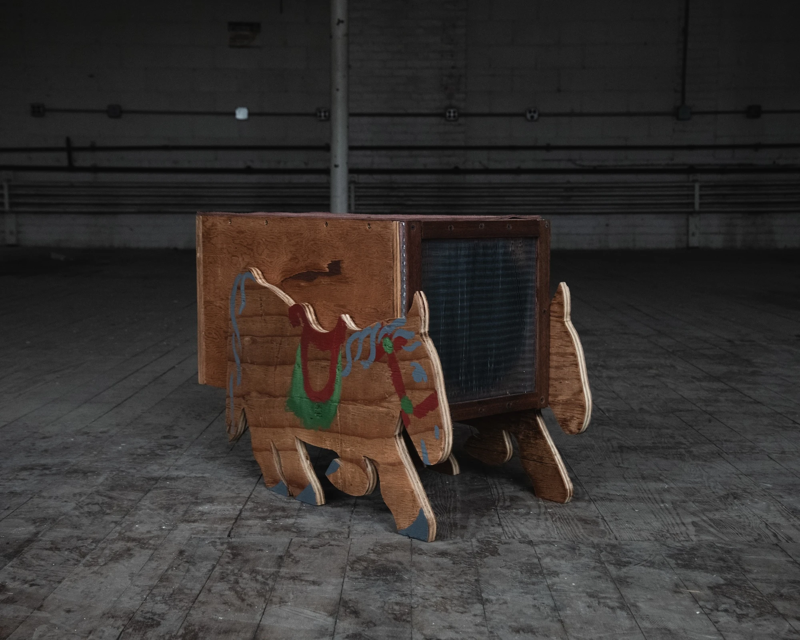
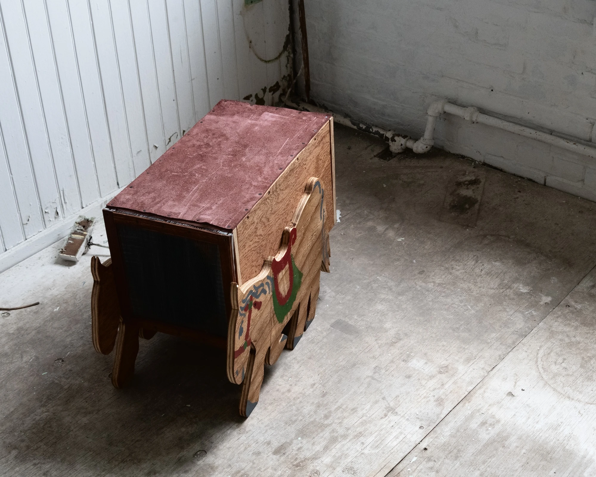
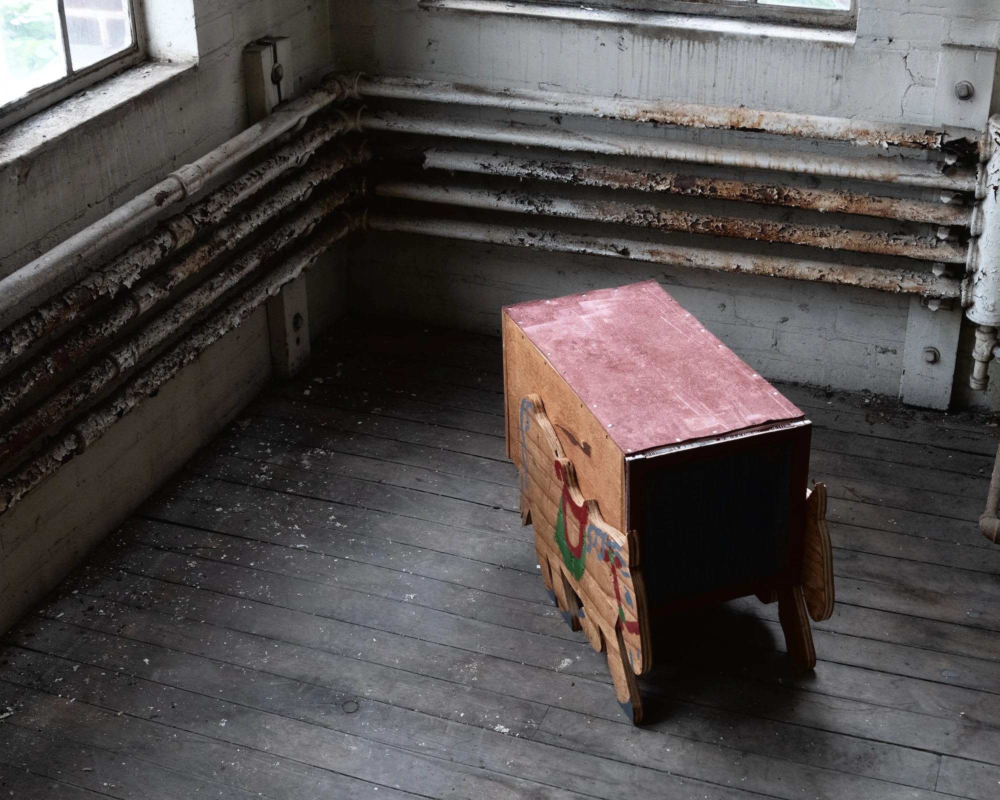

Sculpture/Instruemnt made in collaboration with Enid Corcoran Dimentions(mm):914.4x457.2x609.6 Components: Speaker Drivers, Silicon, Acrylic Paint, Plywood, Danish Oil, Fiberglass Insulation, Electronics


